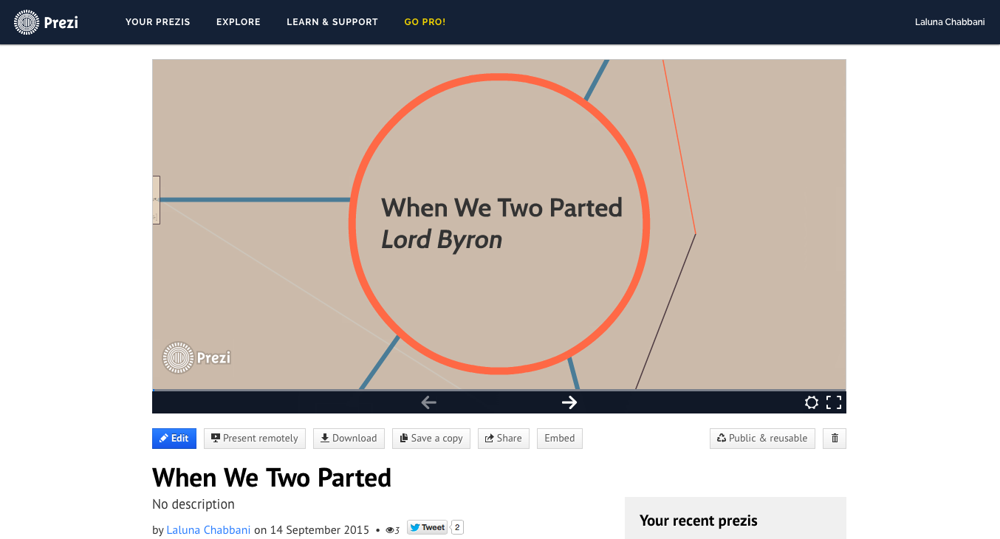
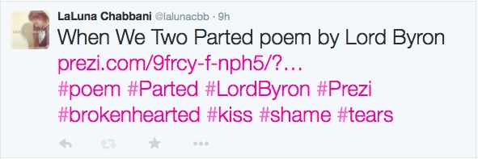

Republish a Text
The poem I chose is When We Two Parted by Lord Byron
When we two parted
In silence and tears,
Half broken-hearted,
To sever for years,
Pale grew thy cheek and cold,
Colder thy kiss;
Truly that hour foretold
Sorrow to this!
If I should meet thee
After long years,
How should I greet thee? -
With silence and tears.
The vows are all broken,
And light is thy fame:
I hear thy name spoken
And share in its shame.
They name thee before me,
A knell to mine ear;
A shudder comes o'er me -
Why wert thou so dear?
In secret we met:
In silence I grieve
That thy heart could forget,
Thy spirit deceive.
The dew of the morning
Sunk chill on my brow;
It felt like the warning
Of what I feel now.
They know not I knew thee
Who knew thee too well:
Long, long shall I rue thee
Too deeply to tell.
I did not choose this platform because it is my favorite but because Prezi is not as known as Fecebook, therefore introducing a new platform used for only presentation and actually explore it in a different type of text gave it a new meaning.
I used an "edgy" layout when the poem has a lot of feelings, emotions, sadness, longing, love, regret. . . which does not translate the essence and of the spirit of the text.
Prezi also allows you to publish any work via Twitter; which I also did.
>>> Go to Prezi

